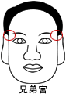

兄弟�m |
（左右�擅济�的位置、左兄弟右姊妹） |

一、眉毛短促的人
1．脾�獠环�定、外�^�S和、不易�c人和睦相��。
2．兄弟姊妹感情不好、�v好也是各自奔忙。
3．兄弟感情�����啄暌懒髂晁阒�。
二、眉毛粗糙的人。
眉稀之人不可交、兄弟�o�x。
1．易�c人相��脾�獠患选�
眉毛凌�y、兄弟不睦、��工作不�M。
2．易有法律�V�A事件�l生。
三、眉毛旋螺的人。
1．脾�庾��摹����怛v�v。 唐��：���T低����夫婿、��眉深�\入�r�o。
2．易有法律�V�A事件。
四、眉毛有�g�嗟娜恕�
1．兄弟姊妹感情��有挫折、易有不和或意外��亡事故。
2．小心兄弟姊妹�g及自己健康方面出���}。
五、眉毛有光彩的人。
1．精神活力充足、有服�沾蟊�之心。
2．能�V受群��的敬重。
六、眉毛有眉�Ф�骨的人。
1．反叛心��、自尊心亦��。
2．眉毛如�L得漂亮、兄弟都能�l�_。
七、眉毛柔��、�L��、清秀的人。
1．兄弟感情良好、能互相助益。
2．看不得兄弟有苦�y、必定鼎力相助。
3．性情�睾汀����躺佟�
�湓]：
１．眉上有痣�榻儇�、忌交有��。
２．眉毛每根�L一公分。 眉多朋友多。
３．女命眉�庀虏棵�粗密，其性�o��。
４．女命眉稀下部毛粗稀（又�o�o自律），其性��婪。
５．眉毛��要�L（眉的�L度）或要毛�L也要�R（生�L的方向好上稻穗子有一定的
方，�o逆生。）
６．眉毛逆生代表凶��（立即拔除，�K修身�B性，洗���r用�崦�巾敷眉，��其平��。）
７．眉�L毫毛（又�椴剩�10�q��毫毛，20�q死。 20�q��30�q死。
30�q��40�q死。 40�q以後�L毫毛又不
同乃�俑毁F有�壑�相。
８．眉��而密多，�矍��崃��夂瘢�
眉疏而白少，主�^、金�X至上、利害�n突�r、六�H不�J
、�ο壬�也不例外。
９．女眉稀薄�]多大�P�S，但眉�^和眉毛的�獾�疏密一定要相*、�^�^�o尾或�^�饷枷 ⑷松�中��有一
段刻骨��心的遭遇，33、34左右更��**。
10．眉毛或眉尾�e�L：父母���邸⑿㈨�父母、也要求夫婿孝��娘家。
11．一字眉：感情�S富、更兼理智、能�帧⒆宰鹦���、�榕���人性格。